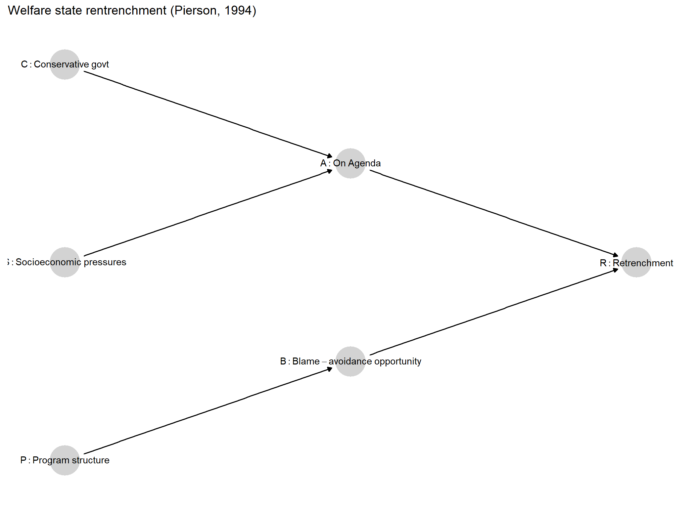
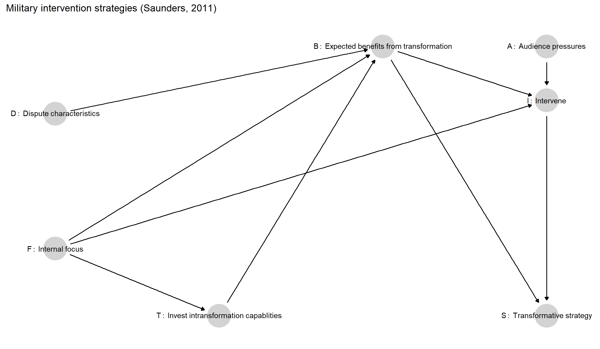
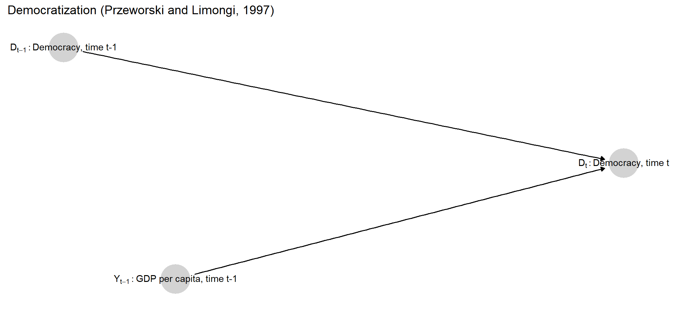

3 Illustrating Causal Models
Chapter summary
We use three arguments from published political science research to illustrate how to represent theoretical ideas as structural causal models. We illustrate using Paul Pierson’s (1994) work on welfare state retrenchment, Elizabeth Saunders’ (2011) research on military intervention strategies, and Adam Przeworski and Fernando Limongi’s (1997) study of the relationship between national wealth and democracy.
In this short chapter, we illustrate how we can encode prior knowledge in a causal model by asking how we might construct models in light of extant scholarly works. We do this drawing on three well-known publications in comparative politics and international relations: Paul Pierson’s book on welfare state retrenchment (Pierson 1994); Elizabeth Saunders’ research on leaders’ choice of military intervention strategies (Saunders 2011); and Przeworski and Limongi’s work on democratic survival (Przeworski and Limongi 1997), an instructive counterpoint to Boix’s argument about a related dependent variable (Boix 2003). For each, we represent the causal knowledge that we might plausibly take away from the work in question in the form of a causal model.
Readers might represent these knowledge bases differently; our aim here is only to illustrate how causal models are constructed, rather than to defend a particular representation (or the works in question) as accurate.
Before we begin, we offer a caution about how the illustrations in this chapter should be understood. For simplicity, in each of the next sections we focus on a specific argument in the literature. We emphasize, however, that in general a causal model should be thought of as a representation of our state of knowledge or beliefs about causal relations within a domain. Suppose, for instance, that we are interested in testing a specific argument in which \(X\) affects \(Y\) through mediator \(M\). In constructing a causal model to guide our empirical analysis, we cannot simply draw that argument in DAG form (\(X \rightarrow M \rightarrow Y\)) and leave it at that. In line with the principles relating to conditional independence outlined in Chapter 2, we must consult our beliefs about this causal domain in a broader sense. For instance, given what we know about the domain from prior observations or studies, is it plausible that \(X\) could affect \(Y\) through a pathway that does not go through \(M\)? If we believe it is possible, then we must also draw a direct \(X \rightarrow Y\) arrow, or our causal model will steer us wrong—even if our primary aim is to examine the pathway through \(M\). Otherwise, our DAG will be enforcing a relation of conditional independence (\(X\) being conditionally independent of \(Y\) given \(M\)) that we do not believe holds. Thus, while we draw on specific works in the illustrations in this chapter, we urge readers to remember that in practice, when generating a causal model, one would want to characterize a broader prior knowledge base in relation to a causal domain.
With these exercises, we aim to illuminate a number of features of causal models and their construction. The examples demonstrate how graphs capture beliefs about relations of conditional independence and illustrate the potential complexity embedded in the causal structures implied by common social-scientific arguments. For each work, we also go beyond the graphs themselves to illustrate both a potential parametric rendering of the causal functions and a nonparametric formulation built on nodal types.
3.1 Welfare State Reform
The argument in Pierson’s 1994 book Dismantling the Welfare State? challenged prior notions of post-1980 welfare state retrenchment in OECD countries as a process driven primarily by socioeconomic pressures (slowed growth, rising unemployment, rising deficits, aging populations) and the rise of market-conservative ideologies (embodied by the political ascendance of figures such as Margaret Thatcher and Ronald Reagan). Pierson argues that socioeconomic and ideological forces put retrenchment on the policy agenda, but do not ensure its enactment because retrenchment is a politically perilous process of imposing losses on large segments of the electorate. Governments will only impose such losses if they can do so in ways that allow them to avoid blame—by, for instance, making the losses hard to perceive or the responsibility for those losses difficult to trace. These kinds of blame-avoidance opportunities are themselves conditioned by the particular social-program structures that governments inherit.
While the argument has many more specific features (e.g., different program-structural factors that matter, various potential strategies of blame-avoidance), its essential components can be captured with a relatively simple causal model. We propose such a model in graphical form in Figure 3.1. Here, the outcome of retrenchment (\(R\)) hinges on whether retrenchment makes it onto the agenda (\(A\)) and on whether blame-avoidance strategies are available to governments (\(B\)). Retrenchment emerges on the policy agenda as a consequence of both socioeconomic developments (\(S\)) and the ascendance of ideologically conservative political actors (\(C\)). Inherited program structures (\(P\)), meanwhile, determine the availability of blame-avoidance strategies. To avoid cluttering the graph, we do not represent the \(\theta\) terms, but implicitly that every node on this graph has a \(\theta\) node pointing into it.
A few features of this graph warrant attention. As we have discussed, it is the omitted arrows in any causal graph that imply the strongest statements. The graph implies that \(C\), \(S\), and \(P\)—which are neither connected along a directed path nor downstream from a common cause—are independent of one another. This implies, for instance, that whether conservatives govern is independent of whether inherited program structures will allow for blame-free retrenchment. Thus, as Pierson argues, a Reagan or Thatcher can come to power but nonetheless run up against an opportunity structure that would make retrenchment politically perilous. Given the absence of bidirectional arrows indicating confounding, the graph similarly implies that the nodal types for all nodes are independent of one another. So, for instance, conservatives are no more or less likely to come to power in places where the policy agenda is more likely to be responsive to conservative ideological demands (i.e., no confounding between \(C\) and \(A\)). These are all strong assumptions.
Further, this graph represents the belief that any effect of program structures on retrenchment must run through their effects on blame-avoidance opportunities. One could imagine relaxing this restriction by, for instance, drawing an arrow from \(P\) to \(A\): Program structures might additionally affect retrenchment in other ways, such as through an impact on the fiscal costliness of the welfare state, thus helping to determine whether reform makes it onto the agenda. If the current state of knowledge suggested that program structures could affect retrenchment via a pathway other than blame-avoidance opportunities, then we would indeed want to include a direct \(P \rightarrow A\) arrow.
Importantly, adding such an arrow would lend our prior beliefs less structure in the sense that we are ruling out fewer causal possibilities by assumption. Put differently, it is the model with fewer connections between nodes that represents the stronger claim about the world since an omitted arrow forbids particular direct effects. Moreover, as we discuss in later chapters, the choice about which nodes to connect or not to connect directly can have consequences for causal-model based research, including for the inferences that we end up drawing. We also discuss, in Chapter 16, the possibility of empirically evaluating alternative model structures.
Where two variables are connected by an arrow, moreover, this does not imply that a causal effect will always operate. Consider, for instance, the arrow pointing from \(A\) to \(R\). The fact that \(A\) sometimes affects \(R\) and sometimes does not is, in fact, central to Pierson’s argument: Conservatives and socioeconomic pressures forcing retrenchment onto the agenda will not generate retrenchment if blame-avoidance opportunities are absent.
The graph also reflects a choice about where to begin. We could, of course, construct a causal account of how conservatives come to power in the first place, how socioeconomic pressures arise, or why programs were originally designed as they were. Yet it is perfectly permissible for us to bracket these antecedents and start the model with \(C\), \(S\), and \(P\), as long as we do not believe that these variables have any antecedents in common. If they do have common causes, then this correlation should be captured in the DAG.1
The DAG itself tells us about the possible direct causal dependencies but is silent on the ranges of and functional relations among the variables. How might we express these? With three endogenous variables, we need three functions indicating how their values are determined. Moreover, every variable pointing directly into another variable must be part of that child’s causal function.
One option would be to take a parametric approach and imagine specific functions connecting parents to children, with \(\theta\) terms representing exogenous “noise.” Let us assume that all variables (including the implied \(\theta\) terms) are binary, with each condition either absent or present. Then, for instance, we can capture quite a lot of Pierson’s theoretical logic with the following quite simple causal functions:
- \(A=CS\theta^A\), capturing the idea that retrenchment makes it on the agenda only if conservatives are in power and socioeconomic pressures are high.
- \(B=P\theta^B\), implying that blame-avoidance opportunities arise only when program structures take a particular form.
- \(R=AB\theta^R\), implying that retrenchment will occur only if it is on the agenda and blame-avoidance opportunities are present.
In each equation, the \(\theta\) term allows for random, exogenous forces that might block the outcome from occurring. In the last causal function, for instance, retrenchment will only occur if retrenchment is on the agenda and blame-avoidance opportunities are present—but even if both are present, the effect on retrenchment also hinges on the value of \(\theta^R\). When \(\theta^R=1\), the \(AB\) combination has a positive causal effect on retrenchment. When \(\theta^R=0\), \(AB\) has no causal effect: retrenchment will not occur regardless of the presence of \(AB\). We can think of \(\theta^R\) as capturing a collection of features of a case’s context that might render the case susceptible or not susceptible to an \(AB\) causal effect. For instance, Pierson’s analysis suggests that a polity’s institutional structure might widely diffuse veto power such that stakeholders can block reform even when retrenchment is on the agenda and could be pursued without electoral losses. We could think of such a case as having a \(\theta^R\) value of 0, implying that \(AB\) has no causal effect. A \(\theta^R=1\) case, with a positive effect, would be one in which the government has the institutional capacity to enact reforms that it has the political will to pursue. Yet \(\theta^R\) would also capture countless other forces, many of which we might not be able to theorize or observe, that might facilitate or block \(AB\)’s effect.
Alternatively, we could take a non-parametric approach, as we generally do in the remainder of this book. In a non-parametric setup, each node’s \(\theta\) term captures that node’s nodal type. Each value of a \(\theta\) term’s range represents a possible way in which the node might respond to its parents. With all substantive variables being binary, we would define \(\theta^A\) as taking on one of 16 values (16 types, given 2 parent nodes); \(\theta^B\) as taking on one of four values; and \(\theta^R\) as taking on one of 16 values; with \(\theta^C\) and \(\theta^S\) each taking on one of two values.
Thus, the central thrust of Pierson’s argument about causal effects could then be represented in nodal-type form as:
- \(\theta^A=\theta^A_{0001}\), meaning that \(A=1\) if and only if both of its parents (\(C\) and \(S\)) are 1, capturing the joint necessity of conservative leadership and socioeconomic pressures for putting welfare state reform on the agenda
- \(\theta^B=\theta^B_{01}\), meaning that \(B=1\) if and only if its parent (\(P\)) is 1, capturing the role of favorable program structures in generating blame-avoidance opportunities.
- \(\theta^R=\theta^R_{0001}\), meaning that \(R=1\) if and only if both of its parents (\(A\) and \(B\)) are 1, capturing the joint necessity of reform being on the agenda and blame-avoidance opportunities being available for retrenchment to occur.
In practice, we would not simply define each of these \(\theta\) terms as taking on the indicated nodal types. Doing so would imply that we had complete certainty that causal relations in all cases behave according to Pierson’s logic. Instead, we would normally allow for a probability distribution over each \(\theta\), representing our beliefs about what kinds of causal effects are most likely or most common. How we define the distributions over \(\theta^A, \theta^B\), and \(\theta^R\) depends on the degree of confidence that we want to express in Pierson’s specific argument (given that we accept the DAG). To represent the belief that Pierson’s argument is correct with certainty and operates in a uniform, deterministic fashion across units, we would simply have degenerate distributions for \(\theta^A, \theta^B\), and \(\theta^R\), with a probability of 1.0 placed on the respective nodal types shown above. To capture uncertainty about the functional relations on any graph or if we believe that there is some heterogeneity of effects across units, we would disperse probability density across types for each \(\theta\). For instance, for \(\theta^R\) we might want to put some weight on \(\theta^R_{0011}\) (blame-avoidance opportunities alone are enough to generate retrenchment), \(\theta^R_{0101}\) (conservative leaders alone are enough), \(\theta^R_{0111}\) (either is enough), and \(\theta^R_{0000}\) (retrenchment will not happen even when both conditions are present), while perhaps putting greatest weight on \(\theta^R_{0001}\).2
Our beliefs about the distribution of exogenous conditions—that is, how common conservative governments, socioeconomic pressures, and particular program structures are—would similarly be captured in distributions over the values of \(\theta^C, \theta^S\), and \(\theta^P\), respectively.
3.2 Military Interventions
In her book Leaders at War, Saunders (2011) asks why, when intervening militarily abroad, leaders sometimes seek to transform the domestic political institutions of the states they target while sometimes seeking only to shape those states’ external behaviors.
Saunders’ central explanatory variable is the nature of leaders’ causal beliefs about security threats. When leaders are “internally focused,” they believe that threats in the international arena derive from the internal characteristics of other states. Leaders who are “externally focused,” by contrast, understand threats as emerging strictly from other states’ foreign and security policies.
These basic worldviews, in turn, affect the cost-benefit calculations leaders make about intervention strategies—in particular, about whether to try to transform the internal institutions of a target state—via two mechanisms. First, an internal focus (as opposed to an external focus) affects leaders’ perceptions of the likely security gains from a transformative intervention strategy. Second, internal versus external focus affects the kinds of strategic capabilities in which leaders invest over time (Do they invest in the kinds of capabilities suited to internal transformation?); and those investments in turn affect the costliness and likelihood of success of alternative intervention strategies. Calculations about the relative costs and benefits of different strategies then shape the choice between a transformative and a non-transformative approach to intervention.
At the same time, leaders can only choose a transformative strategy if they decide to intervene in the first place. The decision about whether to intervene depends, in turn, on at least two kinds of considerations. The first is about fit: A leader is more likely to intervene against a target when the nature of the dispute makes the leader’s preferred intervention strategy (transformative or non-transformative) appear feasible in a given situation. Second, Saunders allows that forces outside the logic of her main argument might also affect the likelihood of intervention: in particular, leaders may be pushed to intervene by international or domestic audiences.
Figure 3.2 depicts the causal dependencies in Saunders’ argument in DAG form (again, with all \(\theta\) terms left implicit). Working from left to right, we see that whether or not leaders are “internally focused” (\(F\)) affects the expected net relative benefits of transformation (\(B\)), both via a direct pathway and via an indirect pathway running through investments in transformative capacities (\(T\)). Characteristics of a given dispute or target state (\(D\)) likewise influence the benefits of transformation (\(B\)). The decision about whether to intervene (\(I\)) is then a function of three factors: the presence or absence of an internal focus (\(F\)), the expected relative net benefits of transformation (\(B\)), and audience pressures (\(A\)). Finally, the choice of whether to pursue a transformative strategy (\(S\)) is a function of whether or not intervention occurs at all (\(I\)), and of cost-benefit comparisons between the two strategies (\(B\)).

This DAG illustrates how readily causal graphs can depict the multiple pathways through which a given variable might affect another variable, as with the multiple pathways linking \(F\) to \(I\) and \(B\) (and, thus, all of its causes) to \(S\). In fact, this graphical representation of the dependencies in some ways throws the multiplicity of pathways into even sharper relief than does a narrative exposition of the argument. For instance, Saunders draws explicit attention to the fact that causal beliefs (\(F\)) operate on expected net benefits via both a direct and indirect pathways: both shaping calculations of the net benefits of transformation and conditioning investments in capabilities. What is a bit easier to miss without formalization is that \(F\) also acts directly on the choice to intervene as part of the feasibility logic: When leaders assess whether their generally preferred strategy would be feasible if deployed against a particular target, the generally preferred strategy is itself a product of their internal or external focus. The DAG also makes helpfully explicit that the two main outcomes of interest—the choice about whether to intervene and the choice about how—are not just shaped by some of the same causes but are themselves causally linked: one can only decide how to intervene if one has intervened.
Omitted links are also notable. For instance, the lack of an arrow between \(D\) and \(A\) suggests that features of the dispute that affect feasibility have no effect on audience pressures. If we instead believed there could be other connections—for instance, that audiences take feasibility into account in demanding intervention—then we would want to include a \(D \rightarrow A\) arrow.
Turning to variable ranges and causal functions, it is not hard to see how one might readily capture Saunders’ logic in a fairly straightforward manner. All variables except \(S\) could be treated as binary with \(F=1\) representing internally focused causal beliefs, \(T=1\) representing investments in transformative capabilities, \(B=1\) representing expectations that transformation will be more net beneficial than non-transformation, \(D=1\) meaning that a dispute has characteristics that make transformation a feasible strategy, and so on. Although there are two strategies, we in fact need three values for \(S\) because it must be defined for all values of the other variables—that is, it must take on a distinct categorical value if there is no intervention at all. We could then define functions, such as:
- \(B=FTD\), implying that transformation will be perceived to be net beneficial in a case if and only if the leader has internally focused causal beliefs, the military is prepared for a transformative strategy, and the dispute has characteristics that make transformation feasible.
- \(I=(1-|B-F|)+(|B-F|)A\), implying that intervention can occur under (and only under) either of two alternative sets of conditions: if the generally preferred strategy and the more net-beneficial strategy in a given case are the same (i.e., such that \(B-F=0\)) or, when this alignment is absent (i.e., such that \(|B-F|=1\)), where audiences pressure a leader to intervene.
As illustrated in the Pierson example, in a non-parametric framework, each parametric causal function represents one nodal type for the relevant \(\theta\). For instance, though we spare the reader the complexities of the corresponding subscript notation, there is a single value of \(\theta^B\) under which the conditions \(F=1, P=1,\) and \(T=1\) generate \(B=1\), and we get \(B=0\) otherwise. Likewise, there exists a single value of \(\theta^I\) under which \(B=1, F=1\) and \(B=0, F=0\) produce \(I=1\), for either value of \(A\); and \(A\) has a positive effect on \(I\) whenever \(B \neq F\). To work with this model, we would specify a probability distribution over all possible nodal types for each node on the graph.
This example also nicely illustrates how much potential causal complexity a moderately intricate argument and causal graph imply. The number of possible nodal types at each node depends on how many parents that node has. Looking at the endogenous nodes here, we have one binary node with one parent (\(T\)), implying 4 nodal types; two binary nodes with three parents (\(B\) and \(I\)), implying 256 nodal types each; and one ternary node (\(S\)) with two parents, implying 81 nodal types.3 If we now conceptualize the set of possible “causal types” as containing all distinct combinations of nodal types—all ways in which a case might behave across all of its nodes (see Chapter 2)—then this graph implies over 21 million different ways in which the values of exogenous nodes (\(D\), \(F\), and \(A\)) might jointly produce patterns of outcomes across the graph. Saunders’ argument effectively represents one of these 21 million possible sets of relations.
The framework that we outline in this book allows for updating our confidence in an argument like Saunders’: We can ask how likely the specific causal type implied by this argument is relative to other causal types. Yet, as we will see, the approach lends itself to a much broader view of causal inquiry than simply asking whether an overall theory or argument is correct. In the approach that we develop here, we will use data to update our beliefs over all causal types allowed for in a model. We can then use these updated beliefs to answer any number of specific causal questions about relationships in the model. For instance, we can use a single set of data to update the model and then ask about the average effect of internal focus on the intervention; the likelihood of a positive effect of internal focus on the intervention; the relative importance of the expected-benefits pathway over the direct pathway in generating a positive effect; or effects at individual steps in the causal chain, such as the effect of expected benefits on the choice of strategy.
3.3 Development and Democratization
Przeworski and Limongi (1997) argue that democratization occurs for reasons that are largely idiosyncratic (i.e., not driven by socioeconomic or macro-structural conditions); but once a country has democratized, a higher level of economic development makes democracy more likely to survive. Economic development thus affects whether or not a country is a democracy, but only after a democratic transition has occurred, not before. Thus, in their description—and contrary to Boix (2003) —democratization is “exogenous”: it is not determined by other variables in the model. The dynamic component of Przeworski and Limongi’s argument—the fact that both the presence of democracy and the causal effect of development on democracy depend on whether a democratic transition occurred at a previous point in time—forces us to think about how to capture over-time processes in a causal model.
We represent Przeworski and Limongi’s argument in the DAG in Figure 3.3. The first thing to note is that we can capture dynamics by considering democracy at different points in time as separate nodes. According to the graph, whether a country is a democracy in a given period (\(D_t\)) is a function, jointly, of whether it was a democracy in the previous period (\(D_{t-1}\)) and of the level of per capita GDP in the previous period, as well as of other unspecified forces \(\theta^{D_t}\) (not pictured).

Second, the arrow running from \(Y_{t-1}\) to \(D_t\) means that \(Y\) may affect the presence of democracy, not that it always (or certainly) does. Indeed, Przeworski and Limongi’s argument is that development’s effect on democracy depends on a regime’s prior state: GDP matters for whether democracies continue to be democracies, but not for whether autocracies go on to become democracies. The absence of an arrow between \(D_{t-1}\) and \(Y_{t-1}\), however, implies a (possibly incorrect) belief that democracy and last period GDP are independent of one another.
This claim implies an asymmetric effect of national income on regime type: High GDP per capita can prevent a democratic state from reverting to autocracy, according to Przeworski and Limongi, but it cannot cause an autocracy to become a democracy. Interestingly, this argument means that even though high national income cannot cause a state to transition to democracy, it can still cause a state to be democratic. The posited causal effect is best understood in counterfactual terms: a democracy with high per capita GDP would have reverted to autocracy if it had had low per capita GDP. The argument might also be expressed as an interaction: If a state was an autocracy in the previous period, then GDP will have no effect on its regime type in the current period; national income has an effect only on states that were democracies in the previous period. The graph allows for this interaction—in making the current regime type dependent both on GDP and prior regime type—but the type of interaction would need to be specified in a causal function.
For a parametric representation of this asymmetric relationship, we can specify a function in which GDP can reduce the likelihood of a transition away from democracy but has no effect on the probability of a transition to democracy, which is exogenously determined. One possible causal function that captures this argument is:
\[D_t = \mathbb{1}(\theta^{D_t} < (1-D_{t-1})p + D_{t-1}Y_{t-1}q))\]
where
- \(D_t\) and \(D_{t-1}\) are binary nodes representing current and last-period democracy, respectively
- \(Y_{t-1}\) represents national per capita GDP in the previous period, scaled to 0-1.
- \(p\) is a parameter representing the probability that an autocracy democratizes
- \(q\) is a parameter representing the probability that a democracy with \(Y_{t-1}=1\) remains democratic
- \(\theta^{D_t}\) represents a random, additional input into whether or not a state is democratic; we might think of this as distributed uniformly over \([0,1]\).
- The indicator function, \(\mathbb{1}\), evaluates the inequality and generates a value of \(1\) if and only if it is true
Unpacking the equation, the likelihood that a country is a democracy in a given period rises and falls with the expression to the right of the inequality operator. This expression itself has two parts, reflecting the difference between the determinants of transitions to democracy (captured by the first part) and the determinants of democratic survival (captured by the second). The first part comes into play—that is, non-zero—only for non-democracies in the last period. For non-democracies, the expression evaluates simply to \(p\), the exogenous probability of democratization. The second part is non-zero only for democracies, where it evaluates to \(q\) times \(Y_{t-1}\): thus, remaining democratic is more likely as national income rises. The inequality is then evaluated by asking whether the expression on the left passes a threshold, \(\theta^{D_t}\). Thus, higher values for the expression on the left increase the likelihood of democracy while the randomness of the \(\theta^{D_t}\) threshold captures the role of other, idiosyncratic inputs. The mean and variance of \(\theta^{D_t}\) capture the overall likelihood of being a democracy as well as the importance of unspecified factors.4 In a model like this, it would be natural to seek to estimate parameters \(p\) and \(q\) as well as try to understand the distribution of \(\theta^{D_t}\).
We can also, of course, represent the asymmetry in a binary setup with nodal types. Specifically, nodal type \(\theta^{D_t}_{0001}\) represents a causal effect in which a democracy will remain democratic if it is wealthy, but will become authoritarian if it is not wealthy: \(D_t=1\) if both of its parents, \(Y_{t-1}\) and \(D_{t-1}\), equal \(1\), and \(D_t=0\) if either of its parents are \(0\). We can see here the clear causal effect of \(Y_{t-1}\) for a country that was a democracy (i.e., \(D_{t-1}=1\)): for such a unit, changing \(Y_{t-1}\) to 0 would change that country from a democracy to a non-democracy in the current period. We can also see, under this nodal type, that for a country that was not a democracy last period (\(D_{t-1}=0\)), changing GDP will have no effect. Consider, in contrast, a \(\theta^{D_t}_{0011}\) type: under this alternative nodal type, a non-democracy becomes a democracy if national income goes from low to high.
Again, we can express our beliefs in the prevalence or likelihood of different causal effects on democracy by assigning a probability distribution over \(D_t\)’s 16 possible nodal types.
Although we do not engage with dynamic models in this book, this model provides a useful opportunity for thinking through the implications of a given distribution of nodal types for a dynamic process. Imagine a setup in which, in each period, one half of units were of type \(\theta^{D_t}_{0001}\), and one half of type \(\theta^{D_t}_{1111}\), meaning that they will be democracies in the current period regardless of income level or prior regime status (with each unit’s type assigned afresh in each period). Suppose, further, that all units’ income level remains constant over time. Now, say that in an initial period, half the units were democracies, half the units had high income, and there was no correlation between these two features or between these features and nodal type. So half the democracies were high-income, half low-income; half the non-democracies were high-income, half low-income; and the two nodal types are also distributed equally among all regime/income combinations.
How does this setup evolve over time? In particular, what happens over time to the association between income level and regime type? In the next period, half of the cases—the half that are of the \(\theta^{D_t}_{1111}\) type—will be democracies regardless of their income level: half of these will be surviving democracies and the other half new democracies, simply because half of the cases of each type were initially democracies. Further, half of this set of democracies will be high-income democracies, simply because half of the \(\theta^{D_t}_{1111}\) cases were high-income, and income is constant.
Of the other half of cases—the \(\theta^{D_t}_{0001}\) types—one quarter will be surviving democracies that survived because of their income: These are the quarter of the \(\theta^{D_t}_{0001}\) types that were both democracies and high-income at the outset. The other three quarters will be autocracies: the quarter of the \(\theta^{D_t}_{0001}\) types that were low-income democracies will be “backsliders,” becoming autocracies because of their poverty; and half of the \(\theta^{D_t}_{0001}\) types that were autocracies at the outset will stay autocracies regardless of income level, as all autocracies of this nodal type do.
So now, a larger share of democracies are high-income. Initially, half of the democracies were high-income. Now half of the \(\theta^{D_t}_{1111}\) democracies are high income (half of all cases), but all of the \(\theta^{D_t}_{0001}\) democracies are high-income (one-eighth of all cases). So now 0.6 of all democracies are high-income. Similarly, the backsliding process boosts the share of autocracies that are low-income, from one half to two thirds.
With a fresh type draw for each unit after each round—randomly transitioning some countries into democracies—we get a similar sorting process in future periods. Each period, some autocracies become democracies, with the high-income ones remaining democracies and the low-income ones remaining democracies only if they get assigned to the “always democratic” type (\(\theta^{D_t}_{1111}\)). Eventually, the system converges on a joint distribution in which wealthy states are all stable democracies and the poorer states transition back and forth between democracy and autocracy across periods—not a terrible approximation of the global state of affairs in the contemporary era.
In DAG syntax, this correlation can be captured by placing the common cause(s) explicitly on the graph or by drawing a dashed line between the correlated nodes, leaving the source of the correlation unspecified.↩︎
In notation that we use later, these beliefs would be represented with a \(\lambda^R\) vector.↩︎
For \(S\), we generalize the formula for calculating nodal types in a fully binary setting, given in Chapter 2 as \(2^{\left(2^n\right)}\). More generally, for a node with \(m\) possible values, and \(n\) parents each of which has \(p\) possible values, the number of nodal types is \(m^{\left(p^n\right)}\). For \(S\), this becomes \(3^{\left(2^2\right)}\).↩︎
Note how, while the causal function nails down certain features of the process, it leaves others up for grabs. In particular, the parameters \(p\) and \(q\) are assumed to be constant for all autocracies and for all democracies, respectively, but their values are left unspecified. And one could readily write down a function that left even more openness—by, for instance, including an unknown parameter that translates \(y\) into a change in the probability of reversion or allowing for nonlinearities.↩︎